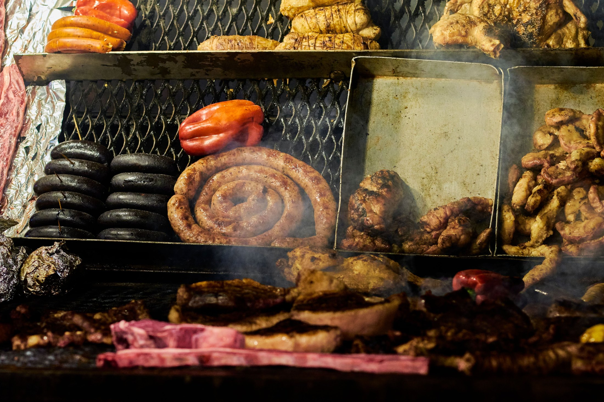
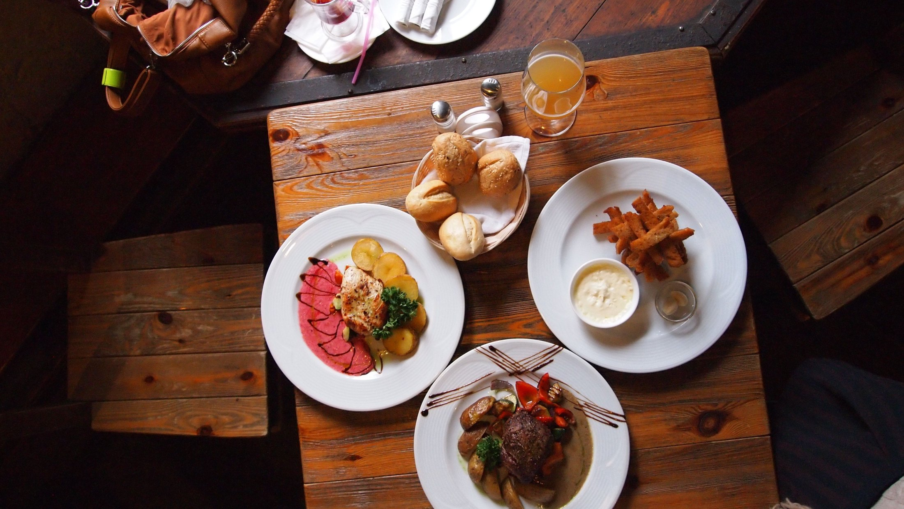
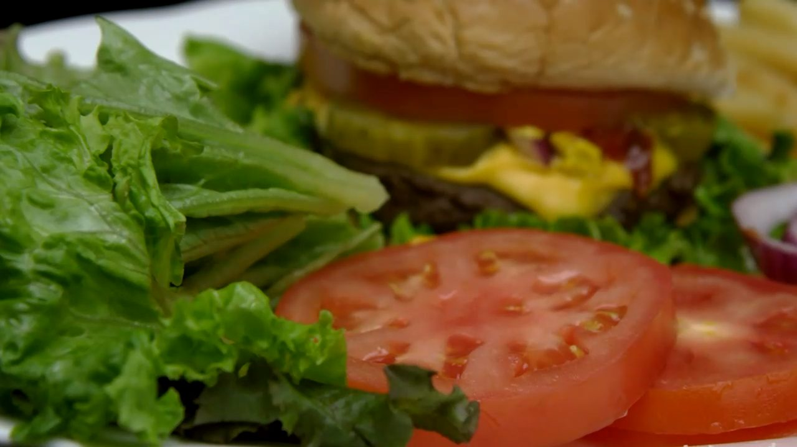
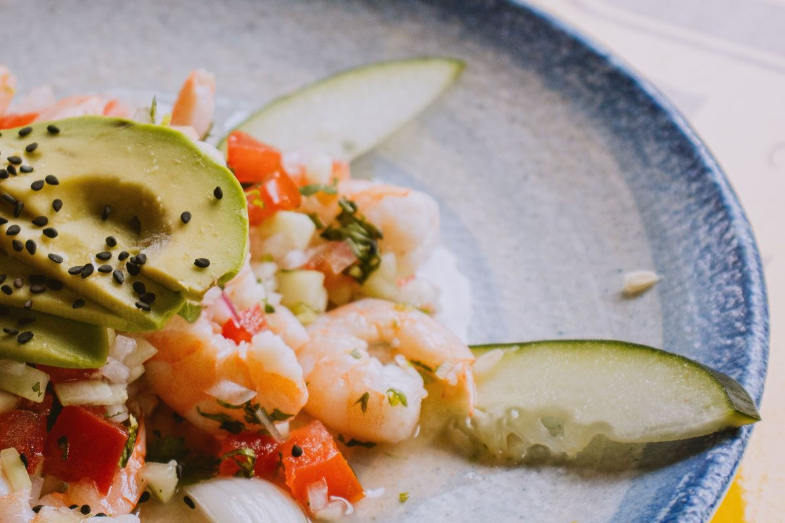
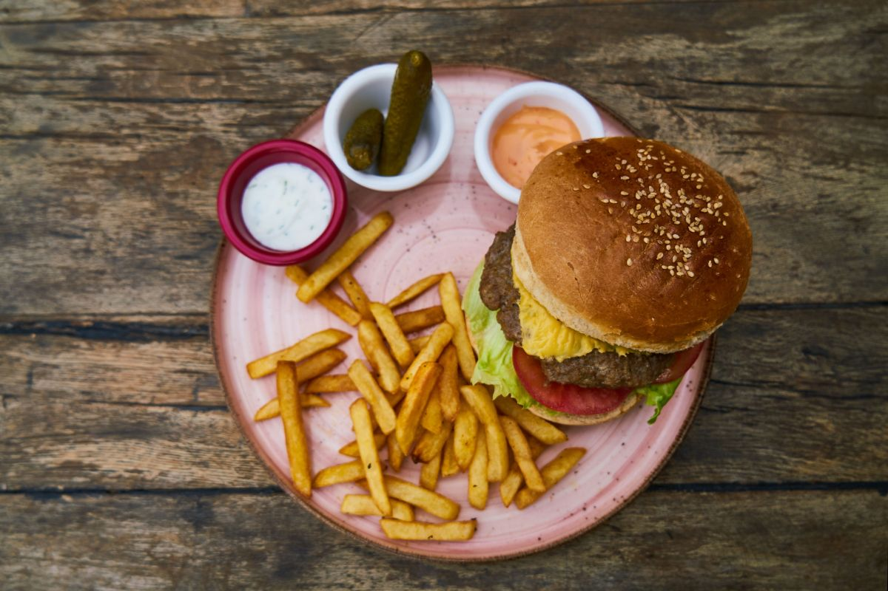
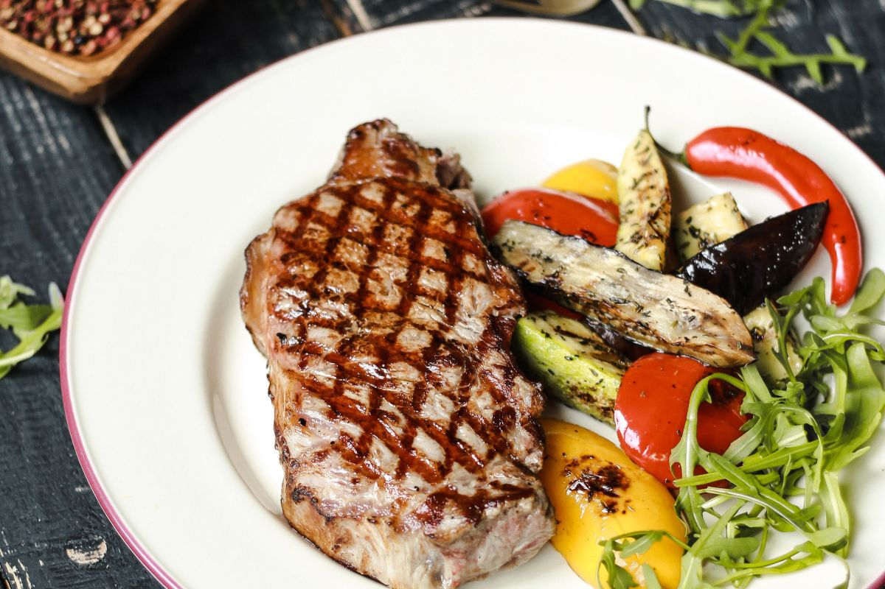
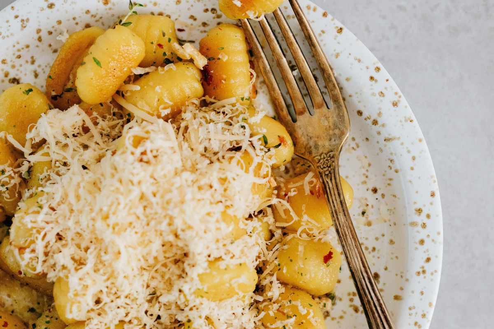
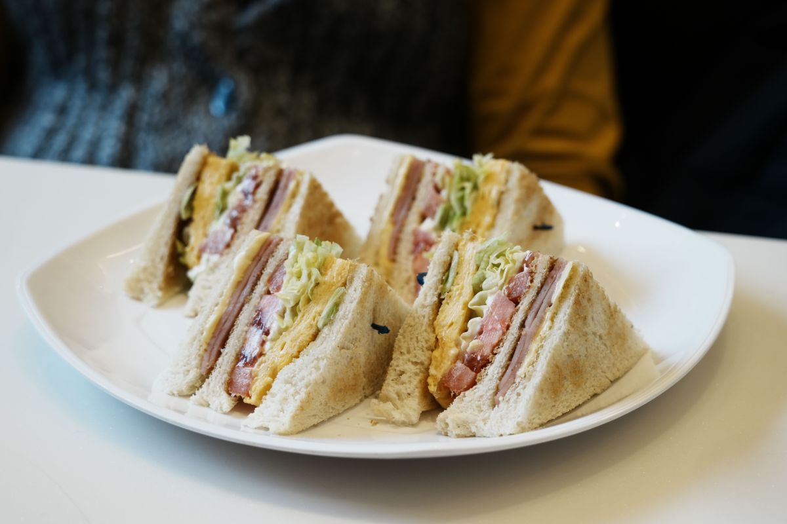

Panguipulli · Martínez de Rozas
El plato, mirado desde donde usted se sienta.
Cocina chilena y de bar: ceviche peruano, hamburguesas, lomo, ñoquis, sándwiches y coctelería con nombre propio. Martes a sábado, de 12:00 a 22:00.
- 4,3de nota en Google
- 45opiniones ya escritas
- #6de 36 en Tripadvisor
- 0páginas donde hoy se lea su carta
Google y Tripadvisor, consultados el 09-09-2026.
La pregunta que nadie contesta
¿Alcanza para dos?
Acá está el porte.
Cuarenta y cinco personas escribieron que las porciones son generosas. Ninguna dijo cuánto es eso, y nadie pide un plato que no sabe de qué porte viene. Los seis platos de abajo están dibujados a escala entre sí: la hamburguesa doble ocupa en la pantalla lo que ocupa en la mesa al lado del ceviche.
-
Ceviche peruano
Pescado, cebolla morada y limón. Fresco y para partir.
⌀ 22 cm · entrada para 2
-
Hamburguesa doble
Doble carne, con papas fritas al lado.
⌀ 26 cm · una por persona
-
Hamburguesa con volcán de queso
La que más nombran las opiniones. El queso cae encima.
⌀ 26 cm · pide dos si vienen con hambre
-
Lomo
Plato de fondo, con acompañamiento.
⌀ 28 cm · alcanza para 2
-
Ñoquis con salsa de queso azul
Sin carne. La opción vegetariana que la gente ya pide.
⌀ 24 cm · una por persona
-
Sándwich
De la mano rápida de la carta. Para llevar también.
⌀ 20 cm · alcanza para 1
¿Cuántos vienen?
Para que nadie discuta: Una porción de ceviche peruano para partir, una de hamburguesa doble y una de ñoquis con salsa de queso azul para el que no come carne. Y una limonada de menta y jengibre para el que maneja.
El mensaje se arma en la pantalla y no se manda solo a ninguna parte: hay dos teléfonos publicados y ninguno confirmado por el dueño, así que el pedido se lee acá y se dicta en la mesa. El botón verde de abajo sí abre WhatsApp, con el número que publica Tripadvisor.
Carta y medidas de ejemplo hasta que las confirme el dueño. Los seis platos salen de lo que nombraron los clientes en sus opiniones; los diámetros son una referencia para que se entienda la escala, no una medida tomada en la cocina.

Cocina chilena y de bar, con la mano peruana del ceviche.
La carta, ordenada de otra manera
El auto se pone de acuerdo
antes de bajarse.
Una carta ancha se lee mal en el celular cuando hay cinco personas discutiendo. Ésta está ordenada por quién viene adentro del auto, que es como se decide de verdad dónde parar.
-
01
El que quiere hamburguesa
- Hamburguesa doble
- Hamburguesa con volcán de queso
- Sándwiches
Los tres nombres salen de opiniones de clientes.
-
02
El que no come carne
- Ñoquis con salsa de queso azul
- Opciones vegetarianas de la carta
Que hay opciones vegetarianas está verificado en su ficha; cuáles son exactamente, lo dice el dueño.
-
03
El que quiere probar algo
- Ceviche peruano
Es lo que separa a Marbesán de una picada: alguien se sentó a pensar esta carta.
-
04
El que anda apurado
- Para llevar
- Sándwiches
Servicio en mesa y para llevar: verificado.
-
05
El que llegó con hambre de plato de fondo
- Lomo
- Ñoquis con salsa de queso azul
Los dos platos de fondo que nombran las opiniones.
Esta no es la carta oficial de Marbesán: son los platos que sus propios clientes nombraron al opinar. La carta de verdad —con sus nombres, sus acompañamientos y sus precios— la manda el dueño y se reemplaza entera en un rato.

Lo que ya está dicho
Nadie tuvo que pedirles
que lo escribieran.
Esto no lo redactó una agencia: son las palabras que se repiten en las 45 opiniones de Google y en las de Tripadvisor, donde Marbesán está #6 de 36 con un 4,7.
- Porciones generosas. Es lo que más se repite, y es lo que esta página convierte en algo que se puede mirar.
- Presentación atractiva. El plato llega armado, no tirado.
- Servicio rápido. Sirve para el que anda con el auto en doble fila.
- Personal amable y buen ambiente. Dicho por varias personas distintas.
- «La mejor comida que he probado en Panguipulli», escrito por una persona que opinó en inglés.

«La mejor comida que he probado en Panguipulli.»
Para el que no se sienta
Para llevar,
y para el que no come carne.
Dos cosas que Marbesán ya hace y que hoy no están escritas en ninguna parte donde alguien las busque. Las dos están verificadas en su ficha, no son un ejemplo de esta demo.
Para llevar
El mismo plato, en la mano. Sirve para el que va de paso a Coñaripe o a Choshuenco y no quiere perder la tarde sentado.
Opciones vegetarianas
En un grupo de seis casi siempre hay uno que no come carne, y ese uno decide dónde para el auto. Acá tiene qué pedir.
Los platos que nombran las opiniones
Así se ve una mesa
de las que se piden acá.
Estas seis fotos son de bancos libres, no del local: están puestas para mostrar el formato de la página. Las de verdad las saca el dueño con el teléfono en media hora y quedan mejor que éstas, porque son las suyas.

Ceviche peruano
Hamburguesa con papas
Lomo
Ñoquis
Sándwich- De la barra
Cuándo y dónde
De martes a sábado,
sin cerrar a las cuatro.
El horario publicado es un bloque corrido de diez horas. En un pueblo donde casi toda cocina cierra entre las 15:30 y las 19:30, el que baja del auto a las cuatro de la tarde se encuentra todo cerrado —menos acá.
Y el fin de semana se planifica al revés: domingo y lunes están cerrados. Si el paseo incluye domingo, la mesa es el sábado.
| Martes a sábado | 12:00 – 22:00 |
|---|---|
| Domingo | Cerrado |
| Lunes | Cerrado |
- Dirección
- Martínez de Rozas 312 o 316, casi llegando a la Costanera. Panguipulli, Región de Los Ríos. Tripadvisor dice 312 y un directorio dice 316. Un dígito de diferencia, y es la puerta a la que llega el cliente.
- Teléfono
-
+56 9 9488 5808
+56 9 8603 4164
Aparecen los dos en internet y se diferencian desde el cuarto dígito. Los dos se pueden marcar desde el celular: esta página no esconde ninguno. El botón verde de WhatsApp usa el primero, que es el que publica Tripadvisor —la misma ficha de donde salen el puesto y la dirección—, y se cambia en un minuto si el bueno es el otro. - @marbesan_ — figura en un directorio, no se pudo comprobar. Por eso está escrito y no enlazado.
- Servicio
- En mesa y para llevar. Hay opciones vegetarianas.
Para el dueño de Marbesán
Por qué te preparé esto.
Lo que encontré · 09-09-2026
- No hay sitio propio. Lo que aparece de Marbesán son fichas de terceros: Google, Tripadvisor y dos directorios.
- 4,3 con 45 opiniones en Google y #6 de 36 en Tripadvisor con 4,7. Eso ya lo ganaste.
- La carta no está en ninguna parte. Los platos de esta página los saqué de lo que escribieron tus clientes al opinar.
- Dos teléfonos y dos números de calle circulando: 312 y 316; 9488 5808 y 8603 4164.
- Se menciona un menú digital en otro servicio, sin enlace que funcione.
Por qué eso importa en tu rubro
El que llega a Panguipulli en auto decide dónde come mirando el teléfono, y decide en dos minutos. Si al buscarte encuentra tres fichas que dicen cosas distintas y ninguna carta, se va a la que sí muestra el plato. Tus cinco vecinos con página se venden todos por ambiente: mesa larga, terraza, pizarra. Ninguno muestra de qué porte viene lo que sirve.
Tu ventaja está dicha por 45 personas —«porciones generosas»— y no está escrita en ningún lado. Eso es lo que hace esta página.
Lo primero que necesito de ti
- Cuál de los dos teléfonos es. El botón verde de WhatsApp está apuntando al que publica Tripadvisor, el +56 9 9488 5808. Tócalo: si se abre tu chat, quedó bueno; si se abre otro, es el +56 9 8603 4164 y lo cambio en un minuto.
- 312 o 316.
- La carta de verdad, aunque sea una foto de la pizarra.
- ¿La cocina de verdad no cierra a las cuatro? Si me lo confirmas, eso pasa a ser el titular de la página: en Panguipulli es un argumento de venta enorme y no lo está usando nadie.
- Diez fotos tuyas: los platos que ya sabes cuáles son.
Qué es de verdad y qué es ejemplo en esta demo
- De verdad: el nombre, la calle, el horario publicado, los días cerrados, la nota de Google con sus 45 opiniones, el puesto en Tripadvisor, que atienden en mesa y para llevar y que hay opciones vegetarianas.
- De verdad, pero dicho por clientes y no por ti: los nueve platos y los tres tragos con nombre propio. Están en las opiniones.
- Ejemplo, marcado con puntitos en la página: los diámetros de los platos, qué lleva cada trago, el número de la calle y el teléfono.
- Fotos: ninguna es del local. Son de bancos libres y están para mostrar el formato.